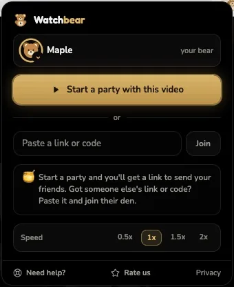

Netflix Party ahora se llama Teleparty.
Cómo hacer una Netflix party gratis, con videollamada
Netflix no tiene un botón para ver juntos en la computadora, así que eso lo hace una extensión de Chrome. Aquí te explicamos cómo usar Watchbear, una extensión gratis, para hacer una Netflix party paso a paso, y te respondemos con honestidad la pregunta del celular.
¿Qué es una Netflix party?
Es ver la misma serie o película al mismo tiempo con amigos que están en otras casas, mientras se escriben o hablan. Si alguien pausa, se pausa para todos; si alguien regresa unos segundos, todos regresan a la misma escena. El nombre viene de una extensión llamada Netflix Party. Esa extensión hoy se llama Teleparty, y "Netflix party" se quedó como el nombre de esta forma de ver Netflix juntos.
Lo que necesitas antes de empezar
- Chrome en una computadora. Watchbear es una extensión de Chrome; hace falta una computadora de escritorio o portátil.
- Una cuenta de Google. Todos entran a la sala con Google. No hay que crear otra cuenta ni recordar otra contraseña.
- Una cuenta de Netflix por persona. Nadie recibe la película; cada uno la abre desde su propia cuenta.
- El mismo título para todos. El catálogo de Netflix cambia según el país. Si ves con alguien que vive en otro país, por ejemplo entre México y España, revisen antes que la película esté en los dos catálogos.
Cómo usar Watchbear para una Netflix party: 4 pasos
-
Instala la extensión y entra
Añade Watchbear desde Chrome Web Store, fija el osito en la barra de herramientas y elige Continuar con Google. Si tu Chrome está en español, la extensión se abre en español.
-
Abre el título en Netflix y monta la fiesta
Abre en Netflix el episodio o la película que van a ver. Haz clic en el osito y elige Montar una fiesta con este vídeo. La sala se abre en el panel lateral de Chrome, justo al lado del reproductor.

La ventana de Watchbear, aquí en inglés. Con Chrome en español, el botón dice Montar una fiesta con este vídeo. -
Manda el enlace de invitación
En el panel, elige Copiar enlace de invitación o Enviar por WhatsApp. Si alguien prefiere no lidiar con enlaces, basta con dictarle el código corto de la sala.
Quien abre el enlace sin tener Watchbear ve primero el botón para instalarlo. Después llega al mismo episodio y lo ve con su propia cuenta de Netflix.

Lo que ve tu amigo al abrir el enlace. La página se muestra en el idioma de su navegador. -
Dale play, habla y reacciona
Cualquiera en la sala puede reproducir, pausar o adelantar, y todos los reproductores se quedan en el mismo segundo. Si quieren hablar, enciendan el micrófono o la cámara desde el panel. Tu cámara empieza apagada cada vez que entras.
Si van a ver varios episodios, pongan Seguir el vídeo del anfitrión en Auto: cuando el anfitrión pasa al siguiente episodio, todos pasan con él.

Una sala en Netflix con tres personas en cámara. La captura está en inglés.
¿Netflix party en el celular?
Con Watchbear no se puede. Por ahora Watchbear solo funciona en Chrome en una computadora; no funciona en celulares ni tablets. Todos en la sala necesitan una computadora.
Si alguien tiene que unirse desde el celular sí o sí: según la página de soporte de Teleparty, Teleparty tiene apps para iOS y Android que funcionan con Netflix, Disney+, Hulu y HBO Max. La misma página aclara que las apps tienen menos servicios que la extensión.
Extensión para Netflix party: ¿Watchbear o Teleparty?
Las dos mantienen sincronizado el Netflix de todos, y como nadie comparte pantalla, todos ven con calidad completa. Las diferencias están en las llamadas, el precio y los dispositivos.
| Función | Watchbear | Teleparty |
|---|---|---|
| Precio | Gratis | Plan gratis. Premium cuesta 6,59 dólares al mes, o 3,99 dólares al mes con pago anual (47,88 dólares) |
| Videollamada y voz | Gratis para todos, hasta 8 personas a la vez | Solo los usuarios Premium pueden encender cámara y micrófono; todos los ven y los oyen |
| Sitios | Netflix con ajuste especial, además de YouTube, Vimeo y la mayoría de los sitios con reproductor estándar | Una lista fija: Netflix, Disney+, Hulu, Prime Video, YouTube y HBO Max gratis; Crunchyroll, Paramount+ y ESPN+ con Premium |
| Personas | Hasta 50 | Hasta 1.000 |
| Navegadores | Chrome | Chrome, Edge, Safari y Opera |
| Celular | No, necesita una computadora | Apps para iOS y Android |
Datos de Teleparty tomados de teleparty.com/support el 28 de noviembre de 2026.
Si algo sale mal
- Dice que no hay video en la página. Dale play al video una vez y vuelve a abrir el panel.
- No se enciende la cámara o el micrófono. Chrome pide permiso una sola vez. Si lo rechazaste, dalo en la configuración del sitio en Chrome y vuelve a intentarlo. Si otra app está usando la cámara, ciérrala.
- Alguien va unos segundos atrás. Regresen unos segundos: el salto mueve a todos y vuelven a quedar en el mismo cuadro.
- Netflix se ve en negro. Eso pasa al compartir pantalla. Con Watchbear cada quien abre Netflix en su propia pestaña, así que no hace falta compartir nada.
Preguntas frecuentes
¿Qué es Netflix Party?
Es ver la misma serie o película de Netflix al mismo tiempo desde casas distintas, mientras chatean o hablan. Netflix no trae un botón para esto en la computadora, así que lo hace una extensión del navegador. El nombre viene de una extensión llamada Netflix Party, que hoy se llama Teleparty.
¿Se puede hacer una Netflix party en el celular?
Con Watchbear no: solo funciona en Chrome en una computadora, no en celulares ni tablets. Según su página de soporte, Teleparty tiene apps para iOS y Android que funcionan con Netflix, Disney+, Hulu y HBO Max.
¿Netflix Party es gratis?
Watchbear es gratis, con videollamada y chat de voz incluidos. Teleparty tiene un plan gratis con reproducción sincronizada y chat de texto; para encender la cámara y el micrófono hace falta Premium. En los dos casos, cada persona necesita su propia cuenta de Netflix.
¿Todos necesitan una cuenta de Netflix?
Sí. La extensión no envía la película, solo comparte en qué segundo va. Cada persona abre el título desde su propia cuenta, así que todos tienen que poder verlo.
¿Cuántas personas pueden unirse a una Netflix party?
En Watchbear, hasta 50 personas por sala, y hasta 8 de ellas con la cámara y el micrófono encendidos a la vez.
Monta tu primera Netflix party
Añade la extensión, abre un episodio en Netflix y manda el enlace. Todos se quedan en la misma escena.
Añadir a Chrome, gratisNetflix y Teleparty son marcas de sus respectivos dueños. Watchbear no está afiliado a Netflix ni a Teleparty, ni cuenta con su respaldo.